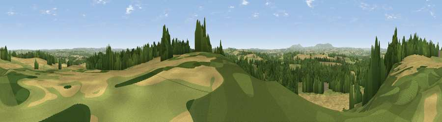

Viewpoint near Quatt
#10736 in England · top 18% of its area beats it · near QuattThe view, rendered

A 360° render of this exact spot computed from the terrain model, tree cover and land cover — summer colours, afternoon light, calibrated against photographs of famous viewpoints. Real trees, hedges and buildings will differ in detail.
The panorama
Grey silhouette: terrain skyline in each direction (720 bearings, Earth curvature and refraction included). Dashed green: skyline with trees (+15 m) and buildings (+8 m) as obstacles. Blue strip: how far the ground is visible on each bearing.
Where the view opens
Wedge length = distance to the farthest visible ground on that bearing (vegetation-aware). Rings at 10, 25 and 50 km.
What fills the view
38% grassland · 31% cropland · 29% woodland · 1% built-up
Angular shares of the visible panorama (visual magnitude), not map area. Landscape diversity 0.50 (0–1 Shannon).
Key numbers
More beautiful places nearby
The staircase of upgrades: each row has a higher view potential than everything closer. Driving times are estimates from straight-line distance, calibrated against real road routing — check an actual route before setting out.
| Place | Direction | Drive | Score |
|---|---|---|---|
| Viewpoint near Enville | SSE · 3 km | ~8 min | 66.9 |
| Viewpoint near Enville | SE · 3 km | ~8 min | 73.1 |
| Knowle Hill | WSW · 11 km | ~21 min | 75.5 |
| Viewpoint near Burwarton | W · 19 km | ~33 min | 83.4 |
| Titterstone Clee | WSW · 22 km | ~36 min | 83.8 |
| The Wrekin | NW · 26 km | ~42 min | 85.0 |
| Viewpoint near Little Wenlock | NW · 26 km | ~42 min | 86.6 |
| North Hill | S · 41 km | ~61 min | 86.8 |
52.48568, -2.31178 · source: screening · position refined by local search. Computed location — check access rights before visiting.